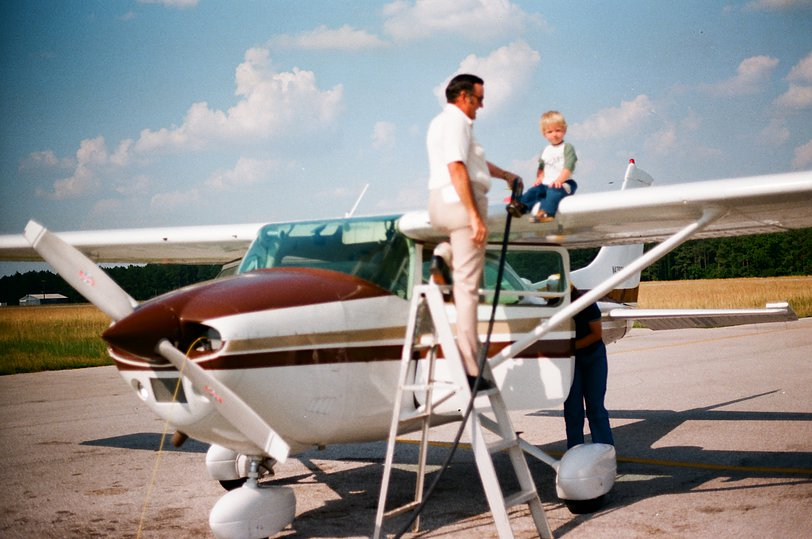
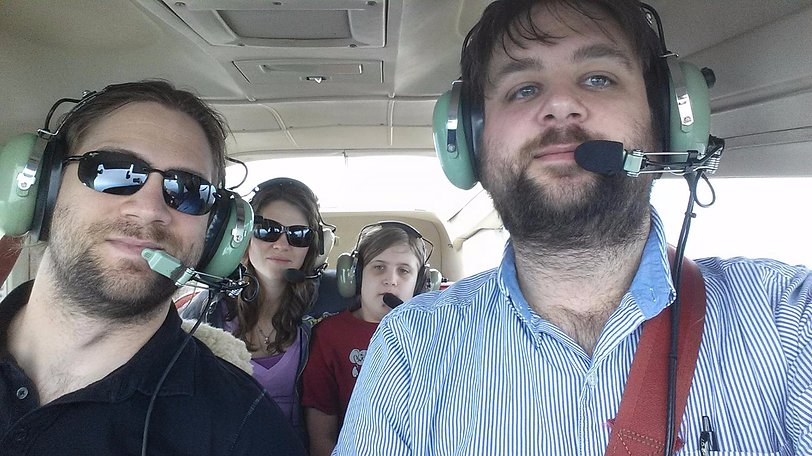

General Aviation
I grew up around airplanes. My grandad is a private pilot, so I became
very comfortable around planes at a young age. We made many trips to
Florida and Texas to see family in his plane.

I started my pilot's license when I was 15 years old. I actually did
my first solo flight on my 16th birthday, the youngest legal age, and I
took my pilot's test on my 17th birthday, again the youngest legal age.
Sadly, after that, time and finances got a little tight, and my flying
slowed for several years, until a couple years ago when I was able to
get active again.

The picture above is from a flight I made with the family for the
famous $100 hamburger a couple years ago. I am currently working on my
instrument rating and hope to have it completed some time in 2016!